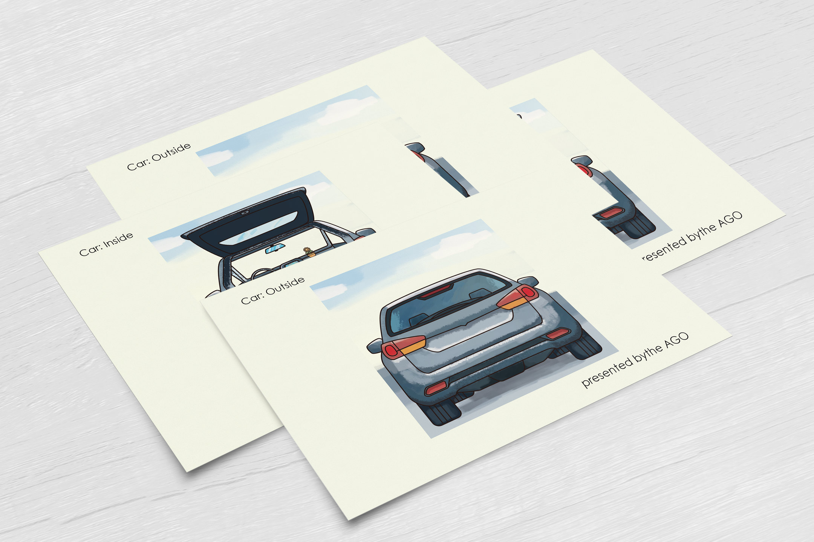
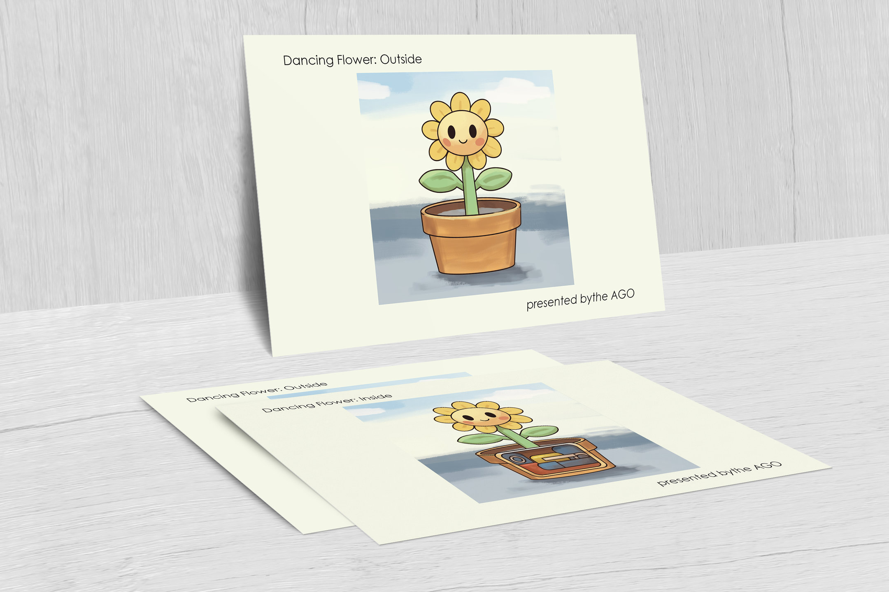

Postcards
Illustrated Postcards: Outside And Inside
A personal series of illustrated postcards, imagined for the Art Gallery of Ontario.
Each pair shows an everyday object from the outside, then opens it up to show what it holds: a car, and a dancing flower in its pot.


Cards
Four cards at 6 × 4 inches, in two pairs: the car, then the dancing flower, each from the outside and then the inside.


Mockups
The cards in two more mockups, laid out on a table and standing against a wall.